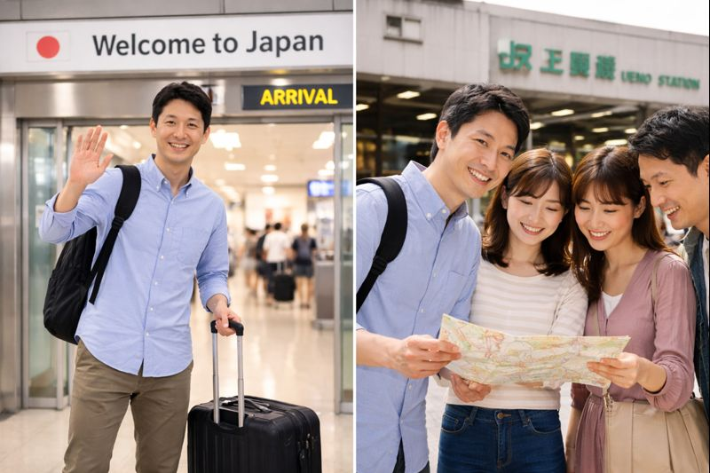

Situación： たんじょうび・来週の予定・来日・交通手段
日付・予定・来日・移動手段
A4横・PDF教材／対象：入門〜一般
1. Diálogo（例）
おの:
リーさん、たんじょうびは いつですか。
リー:
5がつ30にちです。おのさんは。
おの:
わたしの たんじょうびは 8がつ14かです。
リー:
そうですか。らいげつですね。

マリア:
らいしゅうの どようびに どこへ いきますか。
リー:
よこはまへ いきます。マリアさんは。
マリア:
わたしは どこへも いきません。
おの:
リーさんは どこから きましたか。
リー:
シンガポールから きました。
おの:
いつ きましたか。
リー:
7がつ12にちに きました。
おの:
ああ、そうですか。いつ くにへ かえりますか。
リー:
8がつ30にちに かえります。
リー:
せんしゅう うえのへ いきました。
あおき:
だれと、いっしょに いきましたか。
リー:
ともだちと いっしょに いきました。
あおき:
なんで いきましたか。
リー:
ちかてつで いきました。
2. Situación y Pregunta（4題）
-
（１）【Situación】 Hablan de las fechas de cumpleaños.Dices en español: 「Mi cumpleaños es el 14 de agosto.」→ にほんごで なんですか。
-
（２）【Situación】 Hablan de planes para el sábado de la próxima semana.Dices en español: 「Voy a Yokohama.」→ にほんごで なんですか。
-
（３）【Situación】 Hablan de cuándo Lee llegó a Japón.Dices en español: 「Vine el 12 de julio.」→ にほんごで なんですか。
-
（４）【Situación】 Hablan de un viaje la semana pasada y cómo fue.Dices en español: 「Fui en metro.」→ にほんごで なんですか。
3. Respuestas
（１） わたしの たんじょうびは 8がつ14かです。
（２） よこはまへ いきます。
（３） 7がつ12にちに きました。
（４） ちかてつで いきました。
4. メモ欄